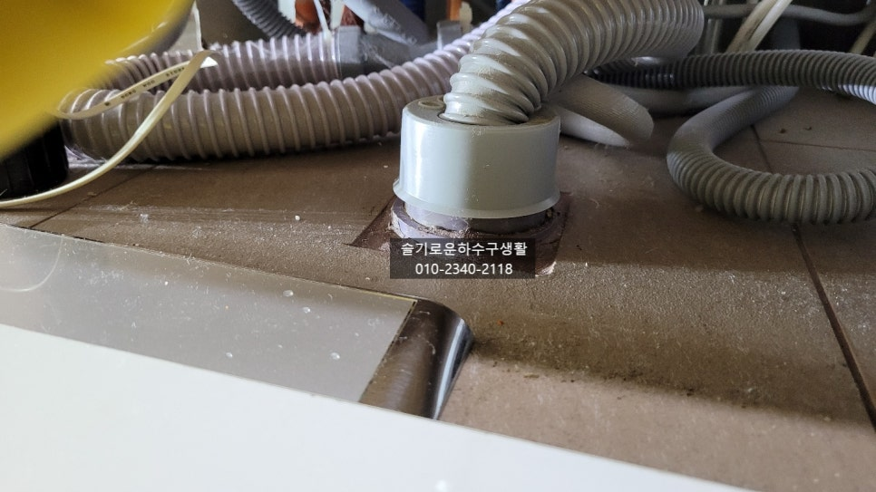
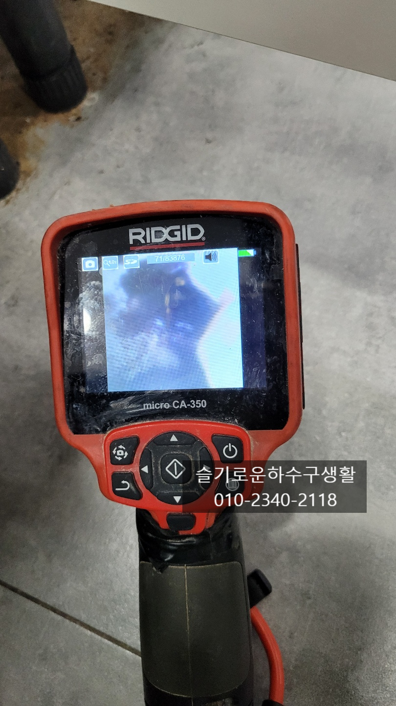
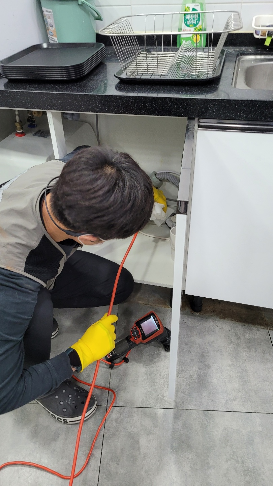
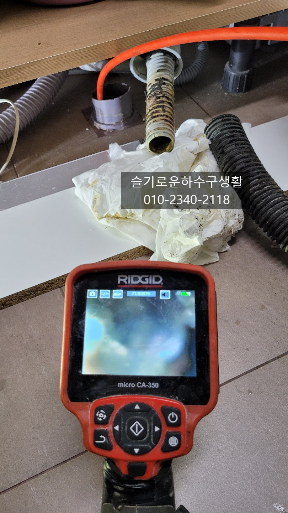
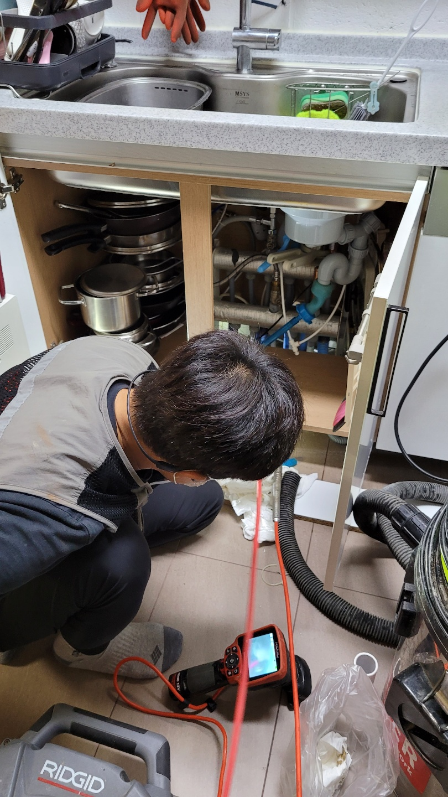
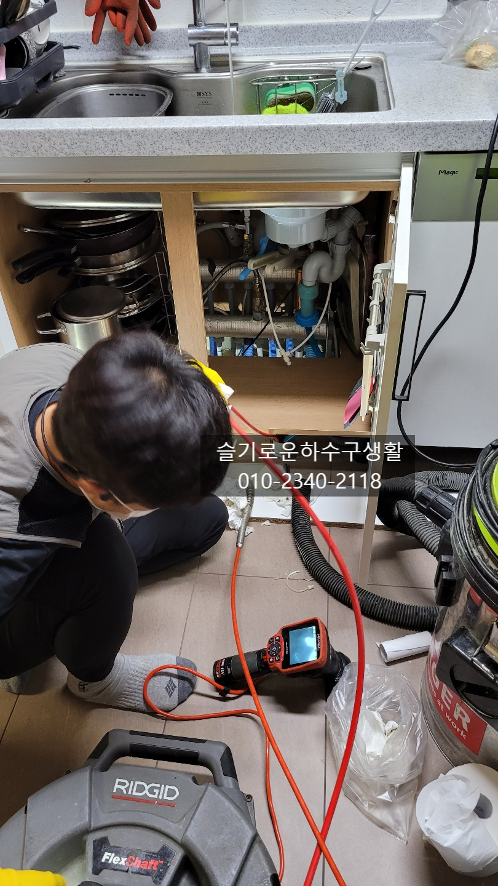

🏠 싱크대악취제거 싱크대냄새원인 씽크대막힘 해결
서울 싱크대막힘 전문 시공 후기

📋 작업 개요
- 위치: 서울
- 서비스 유형: 싱크대막힘, 하수구막힘, 배관막힘, 배관청소, 고압세척
- 작업 일시: 2021. 11. 1. 23:48
- 업체명: 하수구수사대 (010-5615-2118)
🔍 문제 상황
싱크대악취제거 싱크대냄새원인 씽크대막힘 해결
안녕하세요
슬기로운하수구생활 입니다.
오늘은 이사온지 얼마 되지않았지만
싱크대하부장에서 악취가 심하고 배수가
시원하게 되지 않아 저희 슬기로운하수구생활에
연락을 주셨습니다.
주방은 온가족이 함께하는공간으로 악취가
나게되면 집안에 있는 내내 냄새로 스트레스를
받으실텐데요 오늘은 악취의 원인을 찾아 해결해
보겠습니다.
싱크대악취제거 싱크대냄새원인 씽크대막힘 해결
결론부터 말씀을 드리면 씽크대악취의 원인은 대부분 기름슬러지
입니다. 슬러지가 호스나 배관에 남아있게 되면

🔎 원인 분석
💡 전문가 진단: 슬기로운하수구생활010-2340-2118
악취가 올라오는데요 이러한 기름슬러지가 쌓이지
않도록 관리를 해 주시는것이 중요합니다.
싱크대는 물을 쓰는공간이고 물이 나무에 스며들면서
썩는 냄새도 나게 되는데 아무래도 가장심한 원인은
음식물입니다. 음식물이 배관끝까지 모두
나가지 않고 물을 충분히 흘려보내주는것이
좋습니다. 주기적인 세정액을 넣어주는 것도
효과적이에요.
싱크대호스도 너무 길게되면 물이 시원하게 나가지
못하고 호스에 음식물이 남아 썩는 경우도 생기게 됩니다.
식기세척기 호스를 연결하면서 호스를 길게 연결하는
경우도 있는데 되도록 배수가 잘되도록 구배를
주는것이 중요해요.
배관청소방법은 고압세척과 플랙스샤프트 정도가 있겠는데요
고압세척은 내부에서 사용하기에는 부적합하고

🔧 작업 과정
대부분 플랙스샤프트의 체인방식으로 체인이
회전하면서 기름기를 제가하는 작업을 진행합니다.
슬기로운하수구생활
010-2340-2118
내시경카메라를 보면서 꼼꼼하게 남은 이물질을
제거하고 있는 모습입니다.
싱크대배관에서 올라오는 악취를 트랩으로만
잡으려는 분들도 계시지만 악취의 원인은
배관속 기름슬러지므로 완벽하게 제거하는것이
좋습니다.
샤프트를 돌려가며 기름을 제거하는 작업인데요
체인에 고속회전을 하기때문에 이물질을 모두
제거하는데 효과적입니다.
물론 배관에는 전혀 무리를 주지않도록 제작되어
안심하고 사용합니다^^
호스안에도 기름슬러지가 썩어 악취가 많이 나는데요
호스도 주기적인 교체를 해주는게 좋습니다.
호스도 오래되면 악취와함께 곰팡이도 끼어있고
경화되어 변색이 되기도 합니다.
물이시원하게 나는 모습이 보이는데요
이렇게 음식물 찌꺼기도 쌓이지 않게
물을 충분히 흘려보내고 주기적으로 펑크린같은
세정제를 넣어주시는게 좋습니다.
배관도 깨끗해지고 싱크대호스도 새걸로 교체를 완료하였습니다.


✅ 작업 완료
악취가나는 하부장에 그릇과 물건들을 나두게 되니
냄새가 그릇에 베어 있을수도 있으니
악취가 난다면 빠른 해결을 하시길 권해드려요^^
저희 슬기로운하수구생활 팀은
서울,경기,인천 전지역에서 활동중이며
언제든지 연락바랍니다^^




⚠️ 주방 싱크대 배관 막힘 예방 수칙
- ✅ 기름기가 묻은 식기나 프라이팬은 설거지 전 키친타올로 반드시 기름때를 닦아내세요.
- ✅ 주기적으로 싱크대 개수대에 뜨거운 물을 가득 받아 한 번에 내려 배관 내부 기름을 씻어내세요.
- ✅ 배수구 거름망을 미세한 필터로 사용하시고 음식물 찌꺼기가 틈으로 새어 들지 않게 관리하세요.
- ✅ 베이킹소다와 식초를 뜨거운 물과 함께 일주일에 한 번씩 부어주면 배관 살균과 막힘 예방에 좋습니다.
💡 핵심 정리
- 확실한 장비 작업(내시경 점검 및 샤프트 스케일링)으로 원인을 뿌리 뽑습니다.
- 작업 후 1년 이내에 동일한 부위 재발 시 100% 무상 A/S 서비스를 보장합니다.
- 서울 · 경기 · 인천 전 지역에 24시간 언제든 긴급 출동할 수 있도록 항시 대기 중입니다.
❓ 자주 묻는 질문 (FAQ)
🚨 서울 싱크대막힘 문제로 고민이신가요?
정확한 원인 진단과 확실한 시공으로 재발 없는 해결을 약속드립니다.
24시간 긴급 출동 | 서울 · 경기 · 인천 전지역 | 1년 내 재발 시 무상 A/S